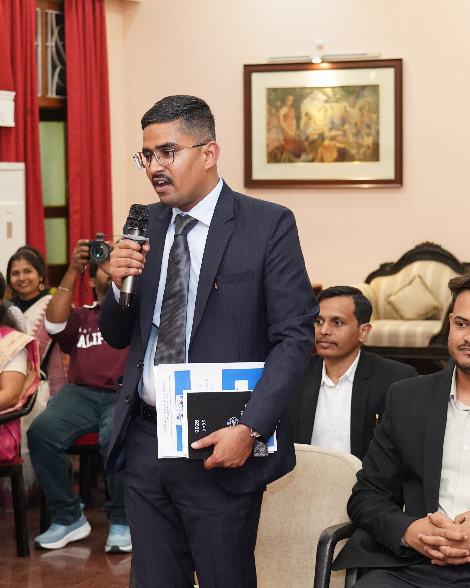

Hrishikesh A. C. Wakhare
Public Policy & Development Practitioner • District-level architect of India's Governance stack • Ex-Govt. of Odisha • CPL & IMPRI Fellow.

Hrishikesh A. C. Wakhare
Fellowship Practitioner • Policy Architect
“Policy is only as good as its execution.”
He works at the operating layer of India’s demographic dividend as Public Policy & Development Practitioner, Ex-Govt. of Odisha, bridging the divide between central policy vision and district realities.
By synchronising 13 disparate government line departments with 14 Project Implementing Agencies (PIAs), he turns high-level mandates into accountable, verifiable outcomes that candidates and enterprises can genuinely measure.
Impact at a Glance
Empirical benchmarks from a 5+ year career in public policy and governance, from grassroots fellowships to district-level execution.
Endorsements
All 29 LinkedIn recommendations from fellows, colleagues, and collaborators — scroll to read them all.
“In my experience across education and governance programs, true system-level thinking is rare, and Hrishikesh clearly brings that approach to his work. Working alongside him in the [skill development fellowship] cohort, I've seen firsthand how he approaches public-sector challenges. Where many look at numbers, Hrishikesh focuses on the architecture behind them. His work in Dhenkanal demonstrates this well; from developing the Dakshyata Panji to resolve cross-departmental beneficiary duplication, to structuring the PIA Performance Index to track active progress rather than cumulative totals. Initiatives like Kaushal Rath, the Nano Unicorn scheme, and the IIT Delhi Industry 4.0 collaboration reflect that same focus on sustainable structural design. Beyond technical execution, Hrishikesh is a thoughtful collaborator who listens deeply during policy and strategy discussions. I would gladly vouch for him in any role requiring strong public-systems intelligence, strategic governance, and program execution.”
Yugal Kishor K.
Program Management | Policy, Education, Skilling & Entrepreneurship Specialist | Ex-CMSD Fellow (Govt of Odisha) | ISB Public Policy '26 | 8+ Years Driving Social Impact
“Some friendships in this sector are built in conference rooms; mine with Hrishikesh was built in Rajasthan's villages. We were both Gandhi Fellows in 2021 — me in Bhilwara working on Mission Buniyaad and digital learning infrastructure, him in Jhunjhunu running teacher development labs, peer-tutoring systems, and SDG advocacy through UN SDSN. The dust, the long days, the slow trust-building with BEOs and teachers — we lived that together. That's how I know him. What I've watched in him since is the steadiness of someone who keeps doing the work, regardless of how visible the stage gets. After Rajasthan, he moved to Bihar with Jan Suraaj for grassroots civic engagement, did his own policy research on NEP 2020 and Digital Public Infrastructure, was selected to the IMPRI Diplomacy Fellowship where he engaged with senior diplomats like Amb. Shashank and Prof. Swaran Singh, and published serious work on India's public diplomacy. Now as a CM Skill Development Fellow in Dhenkanal, he's anchoring district-level governance — data convergence across line departments, monitoring frameworks for implementing agencies, large-scale skilling and entrepreneurship campaigns. Different stages, same person — patient, well-read, humble about it. Hrishikesh is my brother in the work, and one of the few people I'd trust without hesitation on any serious project in education, governance, or public policy. Highly recommend him.”
Raman Jeet
Education Practitioner in Government Systems
“Hrishikesh and I joined the Gandhi Fellowship together in 2021 — I was posted to Madhya Pradesh, he to Rajasthan. Since then, we've taken oddly parallel paths: I moved into Haryana's CM Good Governance Associates programme and now consult with the Haryana Parivar Pehchan departments; he moved into Odisha's CM Skill Development Fellowship. Different states, similar work — which makes us, in a way, useful mirrors for each other. From that vantage point, here's what I can say with confidence: very few practitioners I've encountered combine field instinct and policy clarity the way Hrishikesh does. His work in Dhenkanal speaks for itself. Dakshyata Panji brought coherence to data flows across 13 departments — a coordination challenge anyone who has worked inside state systems knows is genuinely hard. The PIA Performance Index created accountability where there wasn't any. The Kaushal Rath campaign took skilling to the doorstep. The Nano Unicorn scheme seeded 40 enterprises. And alongside all of this, he found time to publish research on public diplomacy — a reminder that he's thinking beyond the immediate assignment. What strikes me most, though, is the balance. Anyone working in state governance knows how rare it is to find someone who understands systems from the inside without losing sight of why the work exists in the first place. Hrishikesh holds that balance consistently. He is also a generous, grounded peer — someone who makes the people around him sharper. I'd recommend him without hesitation to any institution working in state-government consulting, policy implementation, or development management.”
Shubham Bhargava
Consultant - Government of Haryana | Ex-CMGGA | Ex-Gandhi fellow | Governance | Impact
“I had the opportunity to work closely with Hrishikesh during his engagement with the District Administration in Dhenkanal, where he serves as [skill development fellow]. He stands out as an exceptionally effective young public-systems professional. He has successfully led complex initiatives such as developing Dakshyata Panji, coordinating multi-departmental efforts, and driving large-scale employment and skilling programs. His contribution during the "Niyukti Mela" organized by the DSDEO office was particularly commendable, reflecting strong execution, coordination, and stakeholder management. Hrishikesh's work has been highly versatile, with notable efforts in promoting industrial participation and strengthening ecosystem collaboration. His overall contribution has been significant and impactful. He navigates government systems with clarity, patience, and focus, and is a thoughtful collaborator—grounded, reliable, and committed to meaningful outcomes. I would highly recommend him for roles in governance, skilling, and inclusive development.”
Kanhu Charan Panigrahi
Team Lead, DIPA | Associate @ PwC India | Ex-Dhanuka Agritech | Ex-Sumitomo Chemical | Agribusiness, Government Liasioning
“Four years, two fellowships, three states between us — and Hrishikesh is still one of the steadiest peers I know in this sector. We started together as Gandhi Fellows in 2021, he in Rajasthan and I in Nabarangpur, both working with district education systems under the Aspirational District Program. Even then, what stood out about Hrishikesh was the discipline he brought to ordinary fieldwork — the patience to keep showing up at BEO offices, the care he took with teacher development workshops, the way he thought through peer-tutoring systems instead of just running them. None of it flashy, all of it solid. Now, watching him in Dhenkanal as a CM Fellow — anchoring data convergence across 13 departments, designing performance indices for implementing agencies, scaling the Kaushal Rath campaign and Nano Unicorn — it's the same approach playing out at a larger scale. He doesn't lose patience with the slow parts of public-systems work, which is the only reason any of it ever moves. I'd recommend him without reservation to anyone building serious work in governance, skilling, or rural development.”
Subhasmita Sutradhar
Govt of Odisha, TATA Strive||Quest Alliance-District Support Officer, 21st Century Skills||Gandhi Fellow- District Transformation Program
“I have the privilege of working closely with Hrishikesh in the same team under the Chief Minister's Skill Development Fellowship in Odisha. In our work, we always say that true social change requires understanding the problem deeply before acting, and Hrishikesh embodies that philosophy completely. He is an incredible strategist who brings a sharp, data-driven approach to complex district governance. Whether he is converging over multiple-line departments, building unified skill-data architectures like 'Dakshyata Panji' to streamline tracking, or driving massive grassroots placement drives for youth and marginalized women, his focus is always on designing with intent and building sustainable systems. He is an exceptional team player, a brilliant policy mind, and a solid asset to any ecosystem working toward large-scale inclusive development.”
Keshav Gabhale
Program Associate at Centre for Effective Governance of Indian States (CEGIS)
“I came to know Hrishikesh while working on the programmes side of the Citizens for Public Leadership fellowship, where he was one of the fellows. Being on the organising end gives you a particular vantage point — you watch closely how each participant engages, contributes, and carries themselves across the cohort. Hrishikesh consistently stood out. What set him apart was the depth he brought to every discussion. Many participants engage with policy at the level of ideas; Hrishikesh engaged at the level of implementation — grounding abstract debates in the realities of how government actually works, drawn from his experience as a Chief Minister's Fellow embedded with district administration in Odisha. Whether the topic was governance, public systems, or India's larger strategic and diplomatic questions, he brought a rare combination of field grounding and conceptual clarity, and he did so generously — sharing what he was learning rather than performing what he knew. As someone who works in policy and governance myself, those are exactly the qualities I look for. Beyond the substance, Hrishikesh is thoughtful, humble, and genuinely invested in the people around him, with a network and reputation that extend well across the policy ecosystem in India and beyond. I'd recommend him wholeheartedly to any institution working at the intersection of public policy, governance, administration, and diplomacy — he's the kind of practitioner who makes everyone in the room think a little harder.”
Keshav Choudhary
B.A.LL.B. (V), AMU | First Generation Learner | Equitech Scholar | Satyarthi Compassionate Changemaker, SSS'25 | Policy in Action Fellow, YLAC | Tech Policy Fellow, The Dialogue | Digital Justice | Community Facilitator
“I worked alongside Hrishikesh at Top India, where he led a multi-phase grassroots awareness strategy on Panchayati Raj Institutions across rural villages — and he's one of the more thoughtful and committed people I've worked with in the civic engagement space. What stood out about Hrishikesh was the way he combined sharp strategic thinking with genuine field instinct. He designed and executed village-level outreach with real care — convening focus groups, leader interviews, civic marches — and built strong volunteer networks to surface intervention priorities for democratic deepening at the local level. He has a rare ability to translate the messy realities of the ground into clear, actionable plans, and he leads in a way that brings people along rather than pushing them. Watching his trajectory since — from civic engagement work in Bihar to his current role as [skill development fellow] in Odisha, alongside his policy research and ISB training — none of it surprises me. Hrishikesh is the real deal: grounded, intellectually rigorous, and deeply committed to public systems. I'd recommend him to any institution working at the intersection of governance, civic engagement, and inclusive development.”
AKASH D.
Communications & Public Policy
“I've known Hrishikesh first as a senior Gandhi Fellow during his time at Piramal Foundation, and now as a peer in the Odisha [skill development fellowship] cohort — and across both roles, what stands out is his understanding of the full arc from school education to skilling and livelihoods. During his Gandhi Fellowship, Hrishikesh worked deep in Rajasthan's rural government schools — designing project-based learning, anchoring teacher development labs, building peer-tutoring systems, and coordinating closely with Block and District Education Officers. Today, as a CM Fellow in Dhenkanal, he's anchoring the district skilling ecosystem, building data convergence systems, and scaling youth livelihood programmes — and you can see the same instincts at play: patient stakeholder engagement, clear thinking, and respect for ground realities. He's grounded, thoughtful, and genuinely committed to public systems. I'd recommend Hrishikesh to any institution working at the intersection of education, skilling, and inclusive development.”
Rakesh Kumar Nayak
Government of Odisha
“I had the pleasure of working closely with Hrishikesh during the Citizens for Public Leadership fellowship, where we co-authored a research paper — “Safeguarding Elections in the Age of AI: Countering Deepfakes and Foreign Interference to Protect Democratic Integrity” and went on to win the Spotlight Presentation at the CPL Policy Conclave 2025. Collaborating with someone is the truest test of how they think and work, and Hrishikesh passed it with distinction. As a writing and research partner, he was a genuine pleasure — rigorous with evidence, structured in his thinking, and unusually good at connecting the technical and geopolitical dimensions of a problem to its real-world policy stakes. Our paper sat at the intersection of AI, elections, and foreign interference, and Hrishikesh brought both the governance lens and the strategic, almost diplomatic instinct needed to navigate it. He's also a strong communicator, when we took the work to the stage, his ability to present complex ideas clearly and compellingly was a big part of why it landed. Coming from a content and communications background myself, I don't say that lightly. Beyond the work, he's collaborative, generous with credit, and easy to build with. Hrishikesh combines field-grounded governance experience with genuine policy and geopolitical depth, and a wide network across India and beyond. I'd recommend him wholeheartedly to any institution working at the intersection of public policy, governance, technology, and international affairs.”
Diksha B.
Strategic Communications Manager| Policy Advocacy| Content Strategist| Social Media Management| Geopolitics| Foreign Affairs| Passive Observer
“Hrishikesh and I worked closely since we joined the Gandhi Fellowship together in 2021 as part of Cohort 14 in Rajasthan. Over the years, I have seen him grow into a thoughtful and grounded professional with deep commitment to education, governance, and public systems. From leading teacher development initiatives and contributing to SDG 4.7 advocacy work, to engaging in grassroots civic work in Bihar and researching NEP 2020 and Digital Public Infrastructure, Hrishikesh has consistently demonstrated sincerity, intellectual depth, and strong execution skills. Currently, as a [skill development fellow] in Dhenkanal, he is contributing meaningfully to district-level governance and system strengthening initiatives. What stands out most is his humility, balanced perspective, and genuine commitment to impact. I would strongly recommend Hrishikesh for roles in education, public policy, governance, and the social impact sector.”
Arpita Pathak
GPS Consultant | PMU | Transforming Educational Governance
“Having worked as a Documentation Officer with CInI/Tata Trusts, Desai Foundation, and Yuva Mitra, I had the opportunity to closely engage with development initiatives and understand how ideas translate into action on the ground. Through this experience, I came to appreciate practitioners who combine sincerity with execution and Hrishikesh is one of them. What he describes about his work in Dhenkanal — Dakshyata Panji unifying 13 line departments, the PIA Performance Index for tracking implementing agencies, the 780-kilometre Kaushal Rath campaign reaching 6,500 students, the 40 Nano Unicorn enterprises, and the IIT Delhi Industry 4.0 collaboration — reflects both his commitment and ability to translate ideas into meaningful outcomes. He does not oversell his work or seek attention around it; he simply focuses on delivering results.”
Sneha Gawai
Govt. of Odisha l Tata STRIVE I CInI I Development Professional I TISS
“We were both Gandhi Fellows in 2021–23 — he in the schools of Jhunjhunu, I in the Tribal Health Collaborative Big Bet. Different sectors, same instinct for fieldwork that took the long road. By the time we landed in the Odisha [skill development fellowship] cohort, he was a senior fellow in a senior fellow's shape; Dakshyata Panji harmonizing 13-line departments in Dhenkanal, a delta-based performance index for implementing agencies, the Kaushal Rath campaign running 780 kilometres, the Nano Unicorn scheme seeding 40 youth enterprises. The scale is real, but what's stayed with me is how he problem-solves. He thinks structurally, asks the second question, and offers help generously when someone in the cohort is stuck. I'd vouch for Hrishikesh in any team building serious work in public systems, governance, or development. He's one of the few in our cohort I'd want in the room when the problem is genuinely hard.”
Ravi Kumar
Social Impact Consultant
“I've had the chance to know Hrishikesh through our shared journey as [skill development fellow] in Odisha and as part of the ISB Public Policy cohort, and he's one of the most thoughtful and administratively capable practitioners I've come across in this space. What stands out about Hrishikesh is how effectively he operates inside government. Embedded with the District Administration in Dhenkanal, he hasn't just run programmes — he's strengthened the system itself. He built Dakshyata Panji, a centralised live skill database that harmonises data across 13 line departments and eliminated beneficiary duplication; he designed the PIA Performance Index to monitor implementing agencies on real progress; and he anchored District Skill Development Mission deliberations alongside the Collectorate. Coordinating across that many departments, advising district leadership, and translating policy intent into on-ground delivery requires a rare blend of administrative discipline and field judgement — and Hrishikesh has both. In our ISB cohort discussions, that same rigour shows up: he reasons clearly, grounds every argument in implementation reality, and pushes the thinking forward. Beyond the work, he's a collaborative peer who shows up for the people around him. I'd strongly recommend Hrishikesh to any institution working at the intersection of governance, public policy, and diplomacy — he's the kind of person who quietly raises the bar for everyone he works with.”
Srusti Abinash Puri
Empowering the Bottom of the Pyramid through Entrepreneurship
“Hrishikesh and I are peers in the [skill development fellowship] in Odisha, and across the cohort, he stands out as someone who brings real depth to district-level governance work. My own background in rural development at NIRDPR has made me appreciate how hard it is to make government systems actually move on the ground — and Hrishikesh has done exactly that in Dhenkanal. Whether it's harmonising skill data across 13 line departments through Dakshyata Panji, anchoring the District Skill Development Mission deliberations, or running the Kaushal Rath campaign across 780 kilometres to reach thousands of students, his work reflects a real grasp of how rural and semi-urban skilling ecosystems function. He also brings strong civic and grassroots instincts from his earlier work in Bihar and Rajasthan, which shows in how thoughtfully he engages with stakeholders across levels. Beyond the work, he's a steady, collaborative peer — someone who shows up consistently and helps the rest of us think better about our own districts. I'd recommend Hrishikesh to any organisation working in governance, Public Policy, or Diplomacy.”
Yashpal singh Yadav
NIRDPR/ SD & TE Govt. of Odisha/ ISB /Tata Trusts /Education /Skill Development/Governance
“Hrishikesh and I were batchmates in the Odisha Chief Minister's Skill Development Fellowship, running parallel programs in our respective districts—and from that vantage point, he's one of the most consistent, execution-focused fellows in our cohort. Coming from an operations background myself, I notice when someone actually delivers on the ground, and Hrishikesh delivered. In Dhenkanal, he scaled the Kaushal Rath campaign across 780 kilometers to reach over 6,500 students, anchored 96 employment drives that mobilized nearly 3,000 candidates and 1,800 on-the-spot offers, ran the IIT Delhi Industry 4.0 program for 450 students, and seeded 40 youth-led enterprises through Nano Unicorn—all alongside building Dakshyata Panji, the centralized skill database that harmonizes data across 13 line departments. Running this scale of work in a district requires sharp prioritization, steady stakeholder management, and the ability to keep multiple workstreams moving at once. He does it without losing the thread. He's also a thoughtful, generous peer who shares freely with the rest of us. I'd recommend Hrishikesh to any institution that values operators who can think strategically and execute relentlessly.”
Priya V
Operations and Program Management Professional | Skilling, Social Impact and Community Development | Ex Uninhibited, Decathlon and Mphasis
“Nine years in this sector — Gandhi Fellow in Udaipur, Program Leader on the State Transformation Program in Odisha, then leadership stints at Piramal Foundation For Education Leadership, Piramal Swasthya and Naandi Foundation— have shaped a particular question I now ask of every young practitioner I work with: are they shaping the institution, or is the institution shaping them? Hrishikesh is decisively in the first category. From his Gandhi Fellowship days in Rajasthan, where he ran teacher development labs and built peer-tutoring systems with the patience of someone twice his age, to his current role in Dhenkanal — anchoring Dakshyata Panji to harmonise 13 line departments, designing the PIA Performance Index, scaling Kaushal Rath, seeding 40 Nano Unicorn enterprises, anchoring PMKVY 4.0 advanced training — what stays consistent is his willingness to push the system, gently and steadily, rather than be absorbed into it. That's a quality I've come to look for, because it's the one that separates practitioners who eventually lead from those who manage. He's also a thoughtful, generous peer. I'd recommend Hrishikesh to any institution that needs someone who builds — and leads — without losing himself in the system.”
Santoshi Bhopa
Govt.of Odisha|TATA Strive|Public Policy|ISB|Program Management| Nandi Foundation| Piramal Foundation|Gandhi Fellow|Planning & Designing|Facilitation & Mentoring|Leadership||Education|Health|Skill Development
“Hrishikesh and I were Gandhi Fellows together in Cohort 14, 2021 to 2023 — me posted in Sirohi running Mission Buniyaad's ed-tech rollout for 5,000+ girls in government schools, him in Jhunjhunu on parallel education-system work. Different districts, same fellowship, plenty of cohort exchanges along the way. Three years in product delivery at ConveGenius.AI since then have shaped how I now read other practitioners' work — I notice user-centeredness when I see it, and I notice when it's missing. Looking at what Hrishikesh has gone on to build, especially Dakshyata Panji in Dhenkanal — a live skill database unifying data across 13 line departments to eliminate beneficiary duplication — what stands out is the product instinct embedded in a governance problem. He didn't just build a database; he built the workflow that makes it useful for the people on the other end. That's harder to do than it sounds, especially inside government systems. The trajectory in between speaks for itself — Bihar with Jan Suraaj on grassroots civic engagement, independent policy research on NEP 2020 and Digital Public Infrastructure, the IMPRI Diplomacy Fellowship, ISB Public Policy training. Each step has added a layer. Recommend him for work that demands both rigour and user empathy.”
Tej Rawat
Simplifying Learning with Scalable Product Solutions
“A journalism background trains you to listen for what people don't say — the part of the story that sits underneath the official version. When I think about Hrishikesh, that's the angle I keep coming back to. He pays attention to what others miss. I first knew of him as a senior Gandhi Fellow whose Rajasthan work was talked about by the time my batch joined — the way he ran teacher development labs, the relationships he built with BEOs, the depth of his classroom-level work. By the time we became batchmates in the Odisha [skill development fellowship] cohort, he had grown into a public-systems practitioner with real range. In Dhenkanal, he's quietly built the kind of administrative infrastructure most fellows never get to — Dakshyata Panji integrating 13 line departments, a delta-based performance index for implementing agencies — while also running the visible parts well: scaling Kaushal Rath, seeding Nano Unicorn enterprises, anchoring the IIT Delhi Industry 4.0 collaboration. From a district like Malkangiri, you learn quickly which peers are real. Hrishikesh is. Strongly recommend him for serious work in governance, Public Policy, and Administrative development.”
Shubham Anand
Chief Minister Skill Development Fellow Odisha | Driving Social Impact through Project Management
“I've come to know Hrishikesh through Odisha's development and public policy circles, and he's one of the more thoughtful young practitioners working in the state today. As a [skill development fellow] in Dhenkanal, Hrishikesh has been doing genuinely interesting work — building inter-departmental data systems for the district skilling ecosystem, scaling youth livelihood programmes, and pushing convergence across line departments. What's struck me in our conversations is how grounded his thinking is; he holds the field realities of district administration and the larger policy questions in the same breath, which is rare. His earlier work as a Gandhi Fellow in Rajasthan and his policy research on public diplomacy and education only add to that depth. Beyond the work, he's warm, curious, and genuinely invested in the people and communities he works with. I'd recommend Hrishikesh to any institution looking for a public-systems practitioner who brings both rigour and heart to the table.”
Rojalin Behera
Team Leader, Society for Children| NISWASS
“Hrishikesh and I were Gandhi Fellows together in Jhunjhunu, Rajasthan — same district, same Cohort 14, same two years. We weren't reading about each other's work in newsletters; we were in the same villages, walking into the same schools, navigating the same set of teachers, BEOs, and head masters. There are very few people whose practitioner-side I've seen this closely. Hrishikesh is one of them. What I'll say about him from that period is simple: the work was real. While I was running PISA interventions, Changemaker Labs, and Teacher Learning Labs in my schools, Hrishikesh was running peer-tutoring cadres, project-based learning modules, and teacher development workshops in his — and you could feel the difference in his approach. He paid close attention to teachers as people, designed for sustainability rather than visibility, and built relationships with Block and District Education Officers that long outlasted his fellowship months. He also represented India at the UN SDSN Global Schools Advocate cohort during that period and was recognised twice as Advocate of the Month. Since fellowship, he's only deepened. Bihar with Jan Suraaj for grassroots civic engagement, independent policy research on NEP 2020 and Digital Public Infrastructure, the IMPRI Diplomacy Fellowship where he engaged with senior diplomats and published serious work on India's public diplomacy, ISB Public Policy training, and now a [skill development fellow] in Dhenkanal anchoring district-level governance. The trajectory has widened; the seriousness hasn't. Hrishikesh is a practitioner I'd vouch for in any serious work — education, governance, policy, or development leadership. Anyone considering him is lucky to have the option.”
AJHAR MEHMOOD
Program Associate | Ex Gandhi Fellow | Ex Ananta Aspen Fellow
“The kind of work I was trained for at BHU — peace studies, conflict resolution — teaches you to read people for how they hold tension. Whether they reach for the loudest answer, or whether they sit with the harder one. Hrishikesh is firmly in the second category, and I noticed it early. Our paths first crossed through Jan Suraaj, where I was a Research Fellow during the period he joined as a Young Fellow in Bhagalpur. Even at that stage, his work in Panchayat-level governance and civic engagement carried a kind of patience that's rare in young practitioners — he wasn't trying to win arguments with communities, he was trying to understand them. The same instinct now shows up in his [skill development fellowship] work in Dhenkanal: anchoring data convergence across 13 line departments, designing performance indices that hold implementing agencies accountable to actual progress, scaling Kaushal Rath and Nano Unicorn — all of it requires the same skill of holding tension between stakeholders without collapsing it. He's also one of the more grounded peers in our cohort. I'd recommend him to any team navigating complex, multi-stakeholder public-systems work.”
Komal Singh
Govt of Odisha||Political Consultant|| Researcher|| BHU'21
“The first time I came across Hrishikesh's name, I was a younger Gandhi Fellow hearing seniors talk about the kind of fellow you should try to be — someone who took the work seriously, stayed close to teachers, and didn't perform. A year later, when I joined the Odisha [skill development fellowship] cohort and found him as a batchmate, I understood why his name kept coming up. What's stayed consistent across both phases is how he organises around young people. From running teacher development labs and peer-tutoring systems in Rajasthan, to anchoring a 780-kilometre Kaushal Rath campaign reaching over 6,500 students in Dhenkanal, to seeding 40 youth-led enterprises through the Nano Unicorn scheme — the through-line is the same. He listens to young people first, designs second. From three years of working as a National Youth Volunteer myself, I can tell you that's not common. He's also a generous senior and a grounded peer — the kind of person who makes the room better. Highly recommend him for any organisation working with youth, governance, or skilling.”
Sanju .
Development Professional I Govt. Programs I Chief Minister Skill Development Fellow I Govt. of Odisha I Tata Strive I NYKS 2021-23 | Gandhi Fellow 16
“A few years in Odisha's tribal districts and SHG systems will teach you to read practitioners differently. You stop being impressed by what they've done and start watching how they hold the work — whether they shrink it when no one's watching, or whether they keep building. Hrishikesh keeps building. Across our [skill development fellowship] cohort, what stood out about him in Dhenkanal wasn't just the visible scale of work — Dakshyata Panji unifying skill data across 13 line departments, the PIA Performance Index tracking 14 implementing agencies on real deltas, the 780-kilometre Kaushal Rath campaign, the 40 enterprises seeded under Nano Unicorn, the IIT Delhi Industry 4.0 collaboration. It was the seriousness with which he kept returning to the same questions: who's being reached, who's still being missed, what would make this hold after we leave. Coming from years of fieldwork in Odisha's tribal and livelihoods spaces myself, those are the questions I trust. He's also a steady, generous peer in cohort conversations. I'd recommend him to any institution serious about long-term work in governance, skilling, or community development.”
Trilochana Das
Skill | Education
“Two years senior to Hrishikesh in the Gandhi Fellowship and now a batchmate in the Odisha [skill development fellowship] cohort — I have had the unusual privilege of watching him grow up, in a sense, in this sector. When his batch joined Piramal in 2021, what I remember about Hrishikesh was that he didn't carry the urgency many young fellows do — the urgency to show, to prove. He carried something quieter: a willingness to stay with a school, a community, a teacher long enough for change to be real. That same quality has held through Bihar, through Pune, and now through Dhenkanal, where the work has grown to a different scale — Dakshyata Panji harmonising data across 13 departments, the Kaushal Rath campaign reaching 6,500 students, 785 women placed under PLTP, the Nano Unicorn scheme seeding 40 youth enterprises. The scale has expanded, but the patience hasn't shifted. Coming from years of working with disadvantaged youth myself — through Pratham InfoTech, Head Held High, and others — I know how rare that constancy is. Hrishikesh has it. Happy to recommend him to any institution working on second-chance opportunities, governance, or rural development.”
Md kamil akhter
Social Change Maker | Education Enthusiast | CM Fellow, Govt. of Odisha | Gandhi Fellow
“There's a certain kind of energy you recognise quickly in this work — the kind that doesn't run out by month four of district life, that still wants to build something the morning after a hard meeting. Hrishikesh and I found that in each other early in the [skill development fellowship] cohort, and it's why he's one of the peers I've leaned on most. From Bargarh, watching him run Dhenkanal has been a masterclass in what disciplined, ambitious district work looks like. Dakshyata Panji integrating 13 line departments. A delta-based PIA Performance Index that actually tracks movement, not totals. Kaushal Rath at 780 kilometres. Forty Nano Unicorn enterprises seeded. PMKVY 4.0 advanced training rolling out drones and AI. Behind every one of those is a young practitioner who refuses to settle for the minimum, and that's been infectious for the rest of us. Coming from an entrepreneurship background myself, I appreciate how he builds — not louder, not faster, but with intent. Recommend Hrishikesh wholeheartedly to anyone wanting a teammate who runs hard and runs honestly.”
Sarthak Panda
Odisha Chief Minister's Skill Development Fellow | Project Manager, Access Livelihoods | Seeds Production In-charge at LWFSPCL | Access livelihoods
“Coming into the [skill development fellowship] cohort after nearly five years in the private sector, I expected to see a clear gap between how industry thinks and how government works. Watching Hrishikesh in Dhenkanal, I realised that the best practitioners are able to hold both perspectives at once. The work he has anchored — Dakshyata Panji, unifying skill data across 13 line departments; the PIA Performance Index, tracking 14 implementing agencies on meaningful performance deltas rather than vanity metrics; an Industry 4.0 collaboration with IIT Delhi covering 450 students; and PMKVY 4.0 advanced training in drones and AI for 150 youth — reflects someone who genuinely understands both systems. He approaches industry alignment, employability, and outcomes with the mindset of a strong private-sector operator, while managing convergence, stakeholders, and government processes with the effectiveness of a seasoned public-sector practitioner. That combination is far rarer than it appears. Beyond the work itself, he is a calm, thoughtful peer who has consistently been generous whenever others in the cohort needed a sounding board or support. I would strongly recommend Hrishikesh to any team working at the intersection of industry, public policy, and government.”
Sradhanjali Pradhan
Public Policy - Indian School of Business, Graduate (Humanities & Social Science) | Ex Chief Minister Skill Development Fellow, Odisha (SD & TE) | Ex PMO Analyst & Data System Governance Specialist Innodust Techsolutions
“I've come to know Hrishikesh as part of our Citizens for Public Leadership Fellowship cohort, and he's one of the sharper, more grounded public policy minds I've engaged with through the programme. What stands out about Hrishikesh is the way he holds both ends of the policy spectrum — the lived, district-level realities of governance and the higher-order analytical conversations our cohort engages in. Whether the discussion is on adaptive leadership, parliamentary functioning, or political economy, he brings a perspective that's anchored in actual implementation experience as a Chief Minister's Fellow in Odisha, where he's leading skill ecosystem reforms and inter-departmental data convergence work. He listens carefully, pushes thinking forward, and is generous in sharing what the field is teaching him — which makes him the kind of peer who genuinely elevates the room. Beyond the intellectual rigour, he's thoughtful, collaborative, and committed to building public systems that work for people. I'd recommend Hrishikesh without hesitation to any institution working at the intersection of governance, public policy, and inclusive development.”
Sunidhi Chettri
Advocate| WWF-India
“I worked alongside Hrishikesh during our two years as Gandhi Fellows with the Piramal Foundation in Rajasthan, and few people I've met since combine grassroots grit with policy thinking the way he does. Out in remote government schools in Jhunjhunu, Hrishikesh was the kind of fellow who showed up consistently — designing project-based learning modules, anchoring teacher development workshops, building peer-tutoring systems, and working patiently with Block and District Education Officers to align school-level work with state mandates. What set him apart wasn't just the output; it was the way he thought about the work — always trying to connect what was happening in a single classroom to a larger question about education systems and public policy. He's reflective, intellectually honest, and genuinely committed to the people he works with on the ground. Watching his trajectory since — from Bihar to his current role as CM Fellow in Odisha and his policy research at IMPRI and CPL — none of it surprises me. Hrishikesh is one of the most thoughtful public-systems practitioners of our cohort, and I'd recommend him without hesitation to any institution working on governance, education, or inclusive development.”
SHUBHAM NANDRE
NHA | PGGF at Punjab Development Commission | Gandhi Fellow | Youth Leadership
The Convergence Table
A high-velocity, closed-door working table for policy and governance practitioners worldwide. Bring a real structural problem, stress-test it without bureaucratic theatre, and leave with usable frameworks. Not a webinar. Not a dying group chat.